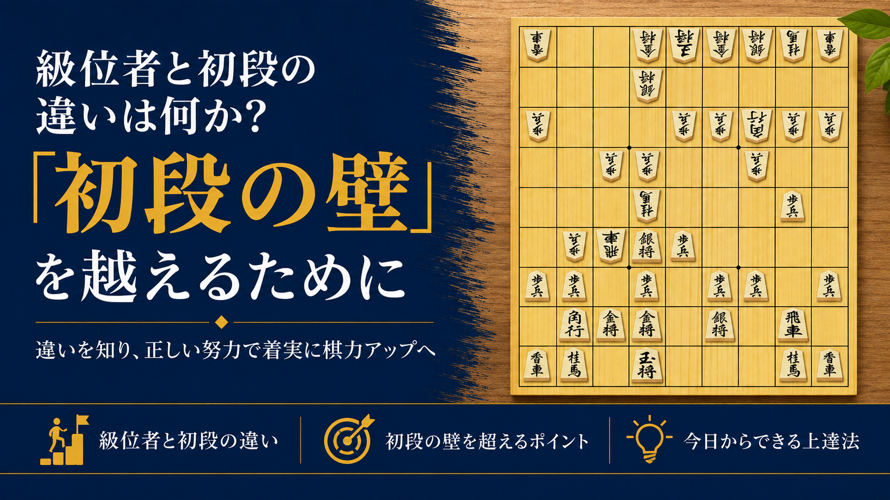

級位者と初段の違いは何か?「初段の壁」を越えるために

将棋を続けていると、多くの方がぶつかる大きな壁があります。それが「初段の壁」です。
初段を目指してがんばっているのに、なかなか勝率が上がらない。上級者にはあと少しのところで負けてしまう。そんな経験をしている方は、決して少なくありません。
この記事では、級位者と初段の実力差がどこにあるのか、そしてその壁を越えるために何をすればよいのかを整理してご紹介します。
級位者と初段の棋力差はどこにあるのか
級位者と初段の違いは、単に「知っている定跡の量」ではありません。実際に差が出やすいのは、次の3つのポイントです。
1. 読みの深さと正確さ
級位者は「2〜3手先」まで読めれば良い方ですが、初段クラスになるとそれよりもう数手先まで正確に読み切る力が求められてきます。特に終盤の1手のミスが、そのまま勝敗を分けることが増えてきます。
2. 手筋の引き出しの数
同じ局面でも、初段の人は「この形にはこの手筋」というパターンを数多く持っています。手筋を知っているかどうかで、同じ持ち時間でも指せる手の質が大きく変わります。
3. 大局観(形勢判断の力)
級位者は目の前の一手一手に集中しがちですが、初段クラスになると「今は攻めるべきか、受けるべきか」という盤面全体の状況判断ができるようになります。この判断力の差が、長い将棋の中でじわじわと勝敗に影響してきます。
壁を越えるためにやるべきこと3つ
① 詰将棋を毎日少しずつ解く
終盤力は詰将棋を解くことで着実に鍛えられます。まずは3手詰めから始めて、慣れてきたら5手詰めに挑戦していくのがおすすめです。
② 自分の負け将棋を並べ直す
勝った将棋より、負けた将棋の方に学びが多くあります。どこで形勢を損ねたのか、指し直すとしたらどこで変えるべきだったのかを振り返る習慣をつけましょう。
③ 手筋を型として覚える
手筋の本や講座で「この形が来たらこう指す」というパターンをストックしていきましょう。実戦の中で使える手筋を1つずつ増やしていくことが、初段への近道です。
まとめ
初段の壁は、才能の差ではなく「読みの深さ」「手筋の引き出し」「大局観」という3つの力の積み重ねで越えられるものです。
次回は、この中でも特に効果が出やすい「詰将棋の取り組み方」について、具体的な手順を詳しくご紹介します。
初段を目指す方向けの指導も行っています。気になる方は、まずは無料体験からお試しください。
無料体験を申し込む